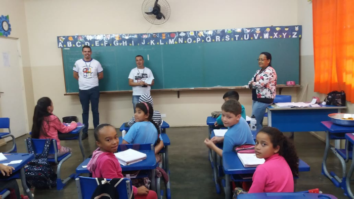
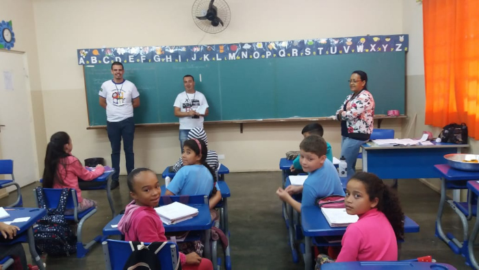

O que é o Conselho Tutelar?
O Conselho Tutelar é um órgão autônomo responsável por zelar pelos direitos da criança e do adolescente, conforme previsto no Estatuto da Criança e do Adolescente (ECA).
O Ministério dos Direitos Humanos e da Cidadania, por meio de sua Secretaria Nacional dos Direitos da Criança e do Adolescente – SNDCA/MDHC, trabalha para a plena garantia dos direitos das crianças e adolescentes do Brasil, que são prioridade absoluta e devem contar com proteção integral, conforme previsto no Art. 227 da Constituição Federal de 1988, e na Lei nº 8.069/1990 – Estatuto da Criança e do Adolescente (ECA). Esta missão reflete o compromisso do Estado brasileiro em promover o bem-estar de todos os jovens, criando um ambiente seguro e saudável para o seu desenvolvimento físico, psicológico, emocional e social.
O caminho para essa realização passa pelo fortalecimento do Sistema de Garantia de Direitos de Crianças e Adolescentes em cada território do país. Nesse contexto, o Conselho Tutelar é o órgão colegiado encarregado pela sociedade de zelar pelos direitos das crianças e adolescentes, exercendo um papel fundamental. O Conselho atua, entre outras funções, em situações de abuso, negligência ou exploração, além de encaminhar as vítimas para os serviços de saúde, educação e assistência social. Esse processo de proteção exige a atuação articulada entre diversos atores sociais e governamentais, garantindo que os direitos das crianças sejam efetivamente assegurados.
Em 2023, o país se prepara para escolher direta e democraticamente, em cada município, seus representantes para cumprir o papel de garantir, com prioridade absoluta, os direitos fundamentais da criança e do adolescente. Esse é o momento de valorizar a democracia, que precisa ser defendida e exercida diariamente, não apenas como um direito, mas como dever de cidadania. Nesse sentido, é importante construir um processo de escolha amplo, qualificado, transparente, seguro e participativo. A escolha dos Conselheiros Tutelares deve ser uma oportunidade para que a sociedade se envolva mais ativamente na construção de um sistema de proteção mais eficiente e responsável.
A atuação do Conselho Tutelar não se limita ao atendimento de casos emergenciais, mas também envolve ações educativas e preventivas, como o apoio a campanhas de conscientização sobre os direitos da criança e do adolescente. Além disso, ao integrar-se à rede de proteção local, o Conselho Tutelar ajuda a promover a cultura de respeito aos direitos humanos e contribui para o fortalecimento da cidadania. Assim, cada escolha de um conselheiro representa um passo significativo para garantir que as políticas públicas voltadas à infância e adolescência sejam efetivas e que as futuras gerações cresçam com dignidade, segurança e respeito.
Funções e Importância
- Atender crianças e adolescentes em situação de risco
- Orientar pais ou responsáveis
- Encaminhar casos aos serviços públicos de saúde, educação, assistência social, entre outros
- Fiscalizar entidades que cuidam de crianças e adolescentes
Quem pode procurar o Conselho Tutelar?
Qualquer pessoa pode procurar o Conselho Tutelar: pais, responsáveis, professores, vizinhos e até as próprias crianças ou adolescentes.